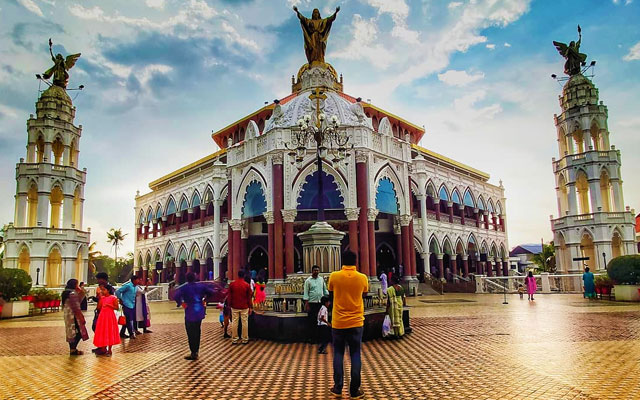

Hill Palace is a prominent Heritage museum, which exhibits countless archaeological relics and belongings of the Maharaja of Kochi. This famous palace, which was built in 1865, comprises forty-nine buildings with enchanting gardens and a children’s park. It is opened to the public from 9 AM to 12 noon and from 2 PM to 4: 30 PM.
Last updated 3 mins ago

One of the first bird sanctuaries in Kerala and undeniably a haven for nature enthusiasts. In the words of Salim Ali (world famous ornithologist), Thattekkad is the “richest bird sanctuary in India” since it is home to hundreds of different endangered species of migratory birds. This thick deciduous forest has plantations of mahogany, teak, rosewood and rubber running through it
Last updated 3 mins ago

A stroll through the lanes of Fort Kochi will definitely attract you to the rustic and old-fashioned neighbourhood of Mattancherry. It is said that back in the days, this cheri (street), was lined with mutton butchers, and so it ended up being called “Muttoncherry” which over the years evolved into “Mattancherry”.
Last updated 3 mins ago